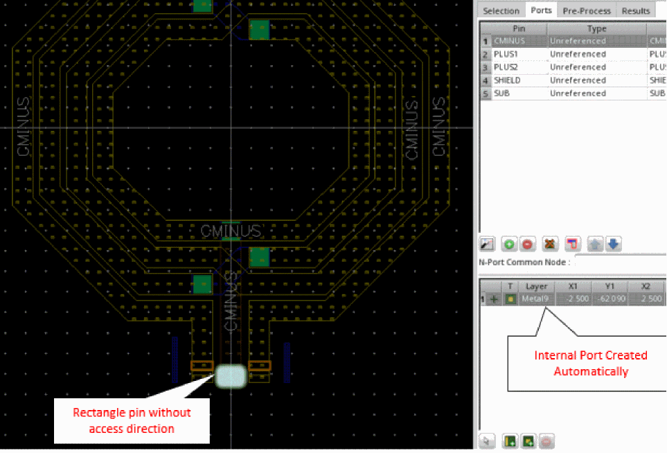
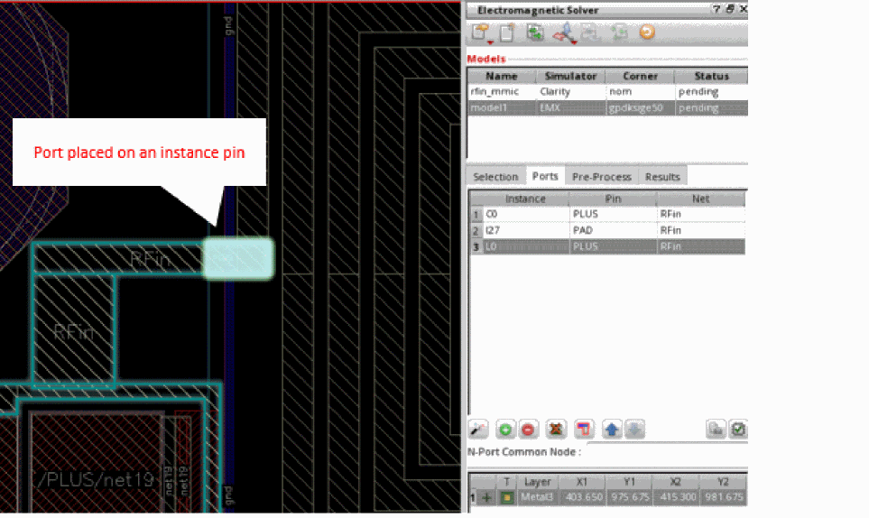
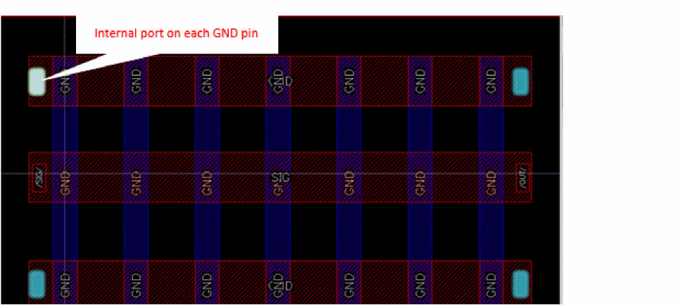

Rules for Port Generation for EMX Models in IC Layouts
When you use the Automatically Generate Ports command in the Ports tab to automatically generate ports for the instances selected on the Selection tab, the tool uses the following rules to generate ports for an EMX model:
-
For top-level pins:
- Creates ports at top-level pin locations.
- If a pin has an access direction, creates an edge port in that direction.
-
If a pin does not have any access direction, creates an internal port that is the same size as the pin.To create an edge port for a pin that has an internal port, specify an access direction for that pin.
To specify the access direction, right-click the pin and choose Properties to open the Edit Rectangle Pin Properties form. Select the appropriate check box to specify the access direction you require and apply the changes. Next, rerun automatic port generation to create an edge port for the updated pin.
-
For a net connected to an instance that is not in the model, creates a port at the instance pin to which that net connects.
 -
If multiple pins with same name are present, the tool creates an internal port on each pin. EMX considers such ports are electrically connected.
 - For pins with multiple pin figures, creates a port using the largest of the available pin figures.
- If two pins touch or overlap, they share the same port.
-
For instances that have terminals with the connection status set to
mustJoin, combines all must-join fingers of a terminal into a single port. For example, for a MOS device that has multiple fingers with themustJoinproperty for the G, S, or D terminals, the tool creates only three ports for the device. One port is created for each MOS pin regardless of the number of fingers. -
For layout instances that correspond to a single schematic instance with a multiplier, a port is created for each schematic pin and a connection to the port is added for each layout pin. For example, if a MIMCAP instance has a multiplier m=2 in the schematic, then the tool creates two ports for the MIMCAP. The port for the PLUS terminal would be connected to the PLUS pin of both MIMCAP layout instances.
Return to top